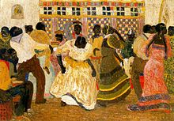
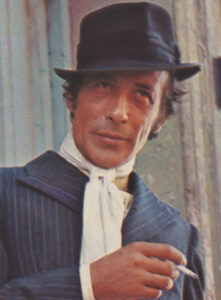

Canyengue en Tango Orillero: de vroegste wortels
Canyengue is de absolute oer-tango. Als cursisten me vragen waar onze dans vandaan komt, wijs ik naar deze stijl uit de jaren '20 en '30. Je herkent hem blindelings aan die stevige, ritmische beat. Je staat in een dichte V-vorm met diep gebogen knieën. Geen stijf of formeel gedoe, maar aards en speels. Je voelt het parket onder je voeten en rolt door de muziek heen.
Zijn ruwere broertje is Tango Orillero. Letterlijk de tango van de orillas, de buitenwijken van Buenos Aires. In die krappe, rokerige cafés was geen plaats voor sierlijke lijnen, dus wat deden ze? Snel voetenwerk, snedige bewegingen en keihard improviseren om botsingen te vermijden.
Vergeet de strakke ballroom. Echte tango ontstond op de straathoek: rauw, ritmisch en ongefilterd.
Eerlijk? In Brusselse milonga's zoals de Cellule 133 of La Tentation zie je dit zelden een hele avond lang. Maar de harde kern van gepassioneerde dansers houdt deze roots springlevend. Canyengue of Orillero dansen dwingt je om uit je hoofd te komen en de volkse, ongetemde ziel van de tango te ervaren.
Tango de Salon en Tango Milonguero: de klassieke omhelzing
Wat dansen we meestal in Brussel? Tango de Salon. Dit is de elegante, vloeiende stijl die je op donderdagavond of zondagnamiddag op de meeste dansvloeren ziet. Alles draait hier om de abrazo (de omhelzing). We dansen gesloten (abrazo cerrado), maar met ademruimte. Lange passen, strakke lijnen. De absolute basisregel die ik er in mijn lessen in hamer: bewaar je eigen as.
Daartegenover staat Tango Milonguero, ook wel *Estilo del Centro* genoemd. Denk aan de overvolle vloeren in het centrum van Buenos Aires. Geen millimeter ruimte voor zwierige showfiguren. Je danst borst-op-borst. De focus ligt honderd procent op muzikaliteit en ritme. Je stapt klein, compact en altijd samen.
Voor mij als docent is dit de essentie. Milonguero dwingt je tot een echte dialoog zonder woorden. Je luistert, je ademt samen, je pauzeert. Grote showfiguren zijn hier respectloos naar de andere koppels op de piste. Zodra de DJ een felle D'Arienzo, Tanturi of Biagi oplegt, weet je hoe laat het is: we sluiten de omhelzing en gaan vol voor het ritme.
Candombé en Tango Villa Urquiza: cultuur en verfijning
Mensen vergeten het vaak, maar Candombé is de zwarte, Afro-Uruguayaanse hartslag van onze dans. Zonder de ritmes van deze tot slaaf gemaakte Afrikanen bestond er simpelweg geen tango. Punt. Die diepe, meeslepende baslijn en die golvende cadans in het lichaam zitten onuitwisbaar in ons DNA verankerd.
Tegelijkertijd heb je de Tango Villa Urquiza, vernoemd naar de gelijknamige wijk in Buenos Aires. Dit is de absolute verfijning uit de jaren '40 en '50. Je staat kaarsrecht in een subtiele V-omhelzing. Kenmerkend voor deze stijl? Prachtige, langgerekte stappen, naadloze ocho's en chirurgisch precies voetenwerk. Beide partners controleren perfect hun eigen as.
Villa Urquiza dansen is flirten met perfectie: je beweegt met een enorme klasse, maar zonder een spatje arrogantie.
Ik waarschuw mijn leerlingen bij BE-TANGO altijd: Villa Urquiza is een werk van lange adem. Het vraagt een ijzersterke techniek en engelengeduld. Je pikt dit niet even op in je eerste lessenreeks. Maar als je het eenmaal voelt, is het de meest respectvolle en elegante manier om de dansvloer over te zweven.

Tango Fantasía en Tango Escenario: de dans als spektakel
Dan de showtango. Ik zeg het wekelijks in mijn lessen: dit bewaar je voor het podium, níét voor de milonga. Tango Fantasía werd in de jaren '50 op de kaart gezet door de legendarische Juan Carlos Copes. Dit is gechoreografeerd spektakel. Ganchos in de lucht, dramatische poses, spectaculaire lifts. Prachtig om te zien, maar levensgevaarlijk als je dit op een drukke zaterdagavond in Brussel probeert.

Nog een stap verder gaat Tango Escenario, oftewel podiumtango. Dit is pure theatrale topsport. Hier telt maar één ding: het publiek omverblazen met acrobatiek, extreme lijnen en drama. Je ziet dit op internationale festivals, in televisieshows en in de grote zalen.
Natuurlijk raken beginners hierdoor geïnspireerd als ze filmpjes op YouTube zien. Dat moedig ik aan. Maar vergis je niet: deze dansers trainen dagelijks klassiek ballet en moderne dans om dit te kunnen. Sociale tango is een compleet andere discipline. Een perfecte choreografie afwerken is knap, maar anticiperen, improviseren en connecteren op een volle Brusselse dansvloer is minstens zo uitdagend.
Tango Nuevo: de levende evolutie
In de jaren '90 ontplofte de tangowereld met Tango Nuevo. Pioniers zoals Gustavo Naveira en een verse lichting iconen – denk aan Mariano 'Chicho' Frumboli, Norberto 'El Pulpo' Esbrés, Fabián Salas, Sebastian Arce en Mariana Montes – gooiden de regels overboord. Hun grootste ingreep? Ze braken de strakke, gesloten omhelzing open. Door die fysieke ruimte ontstond een compleet nieuwe speeltuin aan organische figuren.
Tango Nuevo herken je direct aan de open, flexibele omhelzing. Je krijgt de vrijheid om de as te delen en extreme hoeken op te zoeken. De beweging stopt nooit, alles stroomt door. Plots zagen we op de dansvloer diepe colgadas, zwevende volcadas en messcherpe, zweepachtige boleos die in de klassieke salonstijl fysiek onmogelijk waren.
De oude milongueros in Buenos Aires riepen schande. Heiligschennis! Maar de jonge generatie, ook hier in Europa, omarmde die creatieve vrijheid vol overgave. Wat ik nu, na 15 jaar lesgeven in Brussel, op de vloer zie? De hokjes zijn weg. De beste dansers integreren elementen uit álle stijlen. Dat is precies de visie die we bij BE-TANGO doorgeven: leer de strikte basis, respecteer de geschiedenis, maar wees niet bang om de tango helemaal van jou te maken.